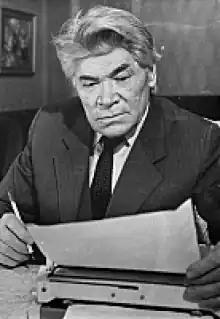

ОЛЕКСІЙ КОЛОМІЄЦЬ
(Нар. 1919 р.)
Народився Олексій Федотович Коломієць 17 березня 1919р. в с. Харківці Лохвицького р-ну на Полтавщині. Він був шостою, найменшою дитиною в родині селянина-бідняка, в якій рано не стало батька. Після закінчення семирічки Коломієць в 1935 — 1938 pp. навчається на робітфаку при Харківському інституті радянської торгівлі, а потім на історичному факультеті Харківського університету. Із студентської лави пішов на фронт. Після демобілізації кілька років віддав комсомольській роботі; був лектором ЦК ЛКСМУ, секретарем Чернівецького обкому комсомолу, в 1950 — 1953 pp. працював відповідальним редактором газети "Молодь України", потім у журналі "Зміна". Тоді ж починає друкувати перші нариси й оповідання, що склали збірку новел "Біла криниця" (1960). Як драматург Коломієць не мав учнівського періоду і досить пізно увійшов у літературу: комедію "Фараони" написав у сорок років. Та вже ця перша спроба принесла йому широке визнання: вперше зіграна в Московському театрі ім. М. В. Гоголя, п'єса в 1962p. ставилася вже в 71 театрі країни. У 1978p. в Київському театрі ім. І. Франка відбулася її п'ятсота вистава. В наступні роки слідує низка драматичних творів: 1961 р. — драматичний памфлет "Дванадцята година". 1963 р. — психологічна драма "Чебрець пахне сонцем" (інша назва "Де ж твоє сонце?"). 1964 р. — п'єса "Прошу слова сьогодні". 1965 р. — драматична дилогія "Планета Сперанта". 1966 р. — "Спасибі тобі, моє кохання". 1969 р. — "Келих вина для адвоката". 1970 р. — п'єса проблемно-психологічного характеру — дилогія "Горлиця", п'єса "Перший гріх". Лірична драма "Спасибі тобі, моє кохання" і дилогія "Горлиця" у 1970p. були відзначені республіканською премією ім. М. Островського. 1972 р. — п'єса "Одіссея в сім днів". 1973 р. — "Голубі олені" — "повість про кохання", яка на фоні численних батальних творів прозвучала винятково ніжною ліричною нотою і в 1977 році була удостоєна Державної премії Української РСР ім. Т. Г. Шевченка. 1975 р. — "Кравцов". 1977 р. — "Срібна павутина". 1978 р. — драма "Дикий Ангел", постановка якої у Київському театрі ім. І. Франка відзначена Державною премією СРСР (1980). Хоча в творчості О. Коломійця переважають п'єси про актуальні, сучасні авторові проблеми ("Двоє дивляться кіно", 1987), є у нього й дві драми на теми минулого: "За дев'ятим порогом" ("Запорізька Січ", 1971) та "Камінь русина" ("Град князя Кия", 1981), написана спеціально до святкування 1500-ліття Києва. Помер О. Коломієць 23 листопада 1994р. Вперше його ім'я з'явилося на афішах театрів на початку 60-х років, коли з успіхом обійшли сотні сцен дотепні, веселі і мудрі "Фараони" (1961) досі нікому невідомого автора. А сьогодні вже наше театральне мистецтво важко уявити без таких сценічних здобутків, якими стали трагічна дилогія "Планета Сперанта", тривожно-медитаційна "Горлиця" чи озвучена високими нотами душевної краси й людського щему поетична повість про кохання "Голубі олені", прозора в чистоті й ніжності своїй "Срібна павутина" чи психологічно вибаглива драма "Дикий Ангел".